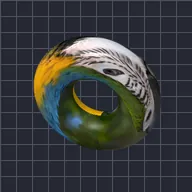

วงแหวน

พันเลเยอร์ให้เป็นรูปวงแหวน
การตั้งค่า
| การตั้งค่า | ประเภท | ช่วงค่า | ค่าเริ่มต้น |
|---|---|---|---|
| หมุน X | มุม | -3600° ถึง 3600° | -35° |
| หมุน Y | มุม | -3600° ถึง 3600° | -20° |
| หมุน Z | มุม | -3600° ถึง 3600° | 0° |
| รัศมี | ตัวเลข | 0.02 ถึง 5 | 0.62 |
| ความหนา | ตัวเลข | 0.01 ถึง 3 | 0.28 |
| ตำแหน่ง | จุด (X, Y) | -5000 px ถึง 5000 px | 0 px, 0 px |
| ขนาด | ตัวเลข | 0.05 ถึง 10 | 1 |
| มุมมอง | ตัวเลข | 0 ถึง 1 | 0.5 |
| การแรเงา | ตัวเลข | 0 ถึง 1 | 0.6 |
| มุมแสง | มุม | -3600° ถึง 3600° | 135° |
| ความมันวาว | ตัวเลข | 0 ถึง 1 | 0.3 |